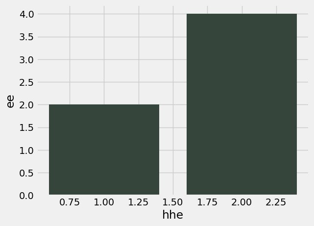
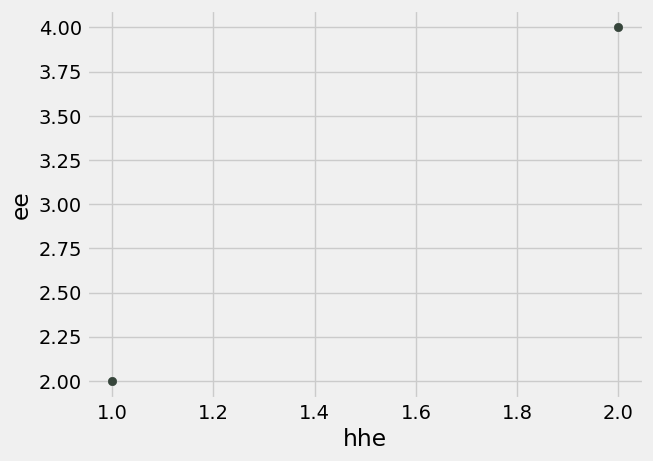

{{"What kind of graphs do you want for your data?"}}
{% if l or b or s and graph_data != "" %}
{% if l %}
Line Graph
{% endif %}
{% if b %}

Bar Graph
{% endif %}
{% if s %}

Scatter Graph
{% endif %}
{% else %}
Line Graph
A line graph—also known as a line plot or
a line chart—is a graph that uses lines to connect
individual data points.
Bar Graph
A diagram in which the numerical values of variables
are represented by the height or length
of lines or rectangles of equal width.
Scatter Plot
A graph of plotted points that show
the relationship between two sets of data.